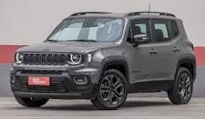
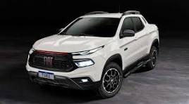
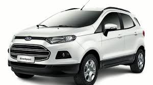
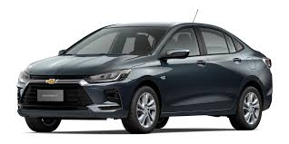
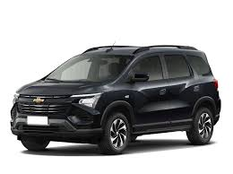
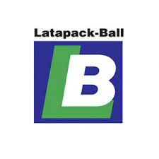
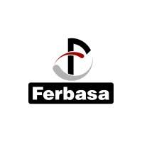
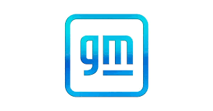
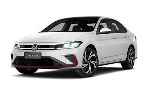
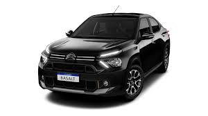

José Marcelo Nascimento Fiscina
Engenheiro de Controle e Automação | Especialista em Indústria 4.0
Automação Industrial • Automação Residencial • IIoT
Sobre Mim
Sou engenheiro apaixonado por conectar máquinas, dados e pessoas. Ao longo de 10 anos trabalhando em linhas automotivas e metalúrgicas de grandes montadoras, aprendi que automação bem feita não é só sobre tecnologia — é sobre confiabilidade, eficiência e transformação real de processos.
Engenheiro de Controle e Automação com mais de 10 anos de experiência em automação industrial, dados e integração de sistemas.
Atuação nos setores automobilístico e metalúrgico, com foco em performance, confiabilidade e transformação digital.
Especialista em CLPs, SCADA, Python, SQL, Node-RED, n8n e Grafana.
Graduado em Engenharia de Controle e Automação
Competências Técnicas
Programação de CLPs
Sistemas SCADA
Integração de Robôs
Programação
Redes Industriais
Banco de Dados
IIoT & Monitoramento
Automação Residencial
Hardware IoT
Documentação
Gestão
Experiência Profissional
Coordenador de Automação — Markez
2023–2025 | Brasil/México- Liderança técnica: Coordeno equipes multidisciplinares (até 7 profissionais) em projetos globais para montadoras, gerenciando startups de linhas avaliadas em R$ 50M+ e garantindo entregas dentro do prazo e orçamento.
- Integração dados-automação: Projetei e implementei arquitetura de integração entre sistemas de automação (CLPs/SCADA) e camada de dados corporativos, desenvolvendo dashboards em Grafana que reduziram tempo de diagnóstico de falhas em 30%.
- Padronização e qualidade: Estabeleci novos padrões de projetos elétricos e documentação técnica com Draw.io, adotados como referência para 3 novas plantas, reduzindo retrabalho em 25%.
- Projetos internacionais: Atuei diretamente em plantas no México, coordenando integração com times locais e garantindo conformidade com padrões globais do cliente.
Engenheiro de Automação — JMF
2021–2023 | Brasil- Arquitetura de dados industriais: Projetei e implementei solução completa de coleta e armazenamento de dados para fornos de tratamento térmico, integrando CLPs Schneider (via Elipse E3 e Node.js) a bancos SQL Server, permitindo rastreabilidade completa de lotes e reduzindo refugo em 15%.
- Automação de processos: Desenvolvi rotinas em Python para coleta automática de indicadores de produção (OEE, downtime), gerando relatórios em tempo real que melhoraram a tomada de decisão da gerência.
- Modernização de supervisórios: Liderei migração de 1 linha de abastecimento para Elipse SCADA com novos alarmes preditivos, resultando em redução de 20% em paradas não planejadas.
- Capacitação técnica: Criei documentação e treinamentos para operadores e time de manutenção, aumentando autonomia da equipe de chão de fábrica.
Programador de PLC Sênior — Markez Robotics
2015–2021 | Brasil- Startups de alta complexidade: Atuei no desenvolvimento e comissionamento de 5 grandes linhas automotivas (Jeep Renegade, Compass, Fiat Toro), programando mais de 20 CLPs Siemens e Rockwell, incluindo módulos safety e integração com mais de 30 robôs KUKA/ABB.
- Eliminação de falhas crônicas: Diagnostiquei causas raiz de falhas recorrentes em células robóticas, implementando melhorias que reduziram paradas por problemas crônicos em 40%.
- Otimização de performance: Analisei e otimizei tempos de ciclo em estações gargalo, entregando ganho de produtividade de 12% na linha de funilaria sem novos investimentos.
- Sistemas de segurança: Programei e validei sistemas Safety PLC integrados a robôs, garantindo certificação das linhas conforme normas internacionais.
Programador de PLC Junior — Rapack
2014–2015 | Brasil- Startup de linhas: Participei do ramp-up de 2 novas linhas de montagem automotiva, realizando programação em Step 7 e WinCC para garantir entrada em operação dentro do cronograma do cliente.
- Suporte técnico em campo: Atuei no suporte direto durante primeiro mês de produção, solucionando mais de 50 chamados e garantindo estabilidade operacional na fase crítica.
- Documentação técnica: Colaborei na criação de manuais de operação e documentação de programas, facilitando transferência de conhecimento para equipe de manutenção.
- Projetos elétricos: Criei projetos elétricos utilizando EPLAN, garantindo conformidade com normas técnicas.
Projetos

Jeep Renegade — Startup de Linha
Atividades:
- Programação PLC Siemens com módulo safety (Step 7)
- Configuração e programação de IHM (WinCC)
- Integração robótica KUKA e ABB
- Configuração de redes Profibus e Profinet
- Suporte às áreas elétrica, mecânica e robótica

Fiat Toro — Startup de Linha
Atividades:
- Programação PLC Siemens com módulo safety (Step 7)
- Configuração e programação de IHM (WinCC)
- Integração robótica KUKA e ABB
- Configuração de redes Profibus e Profinet
- Suporte técnico multidisciplinar
Jeep Compass — Startup de Linha
Atividades:
- Programação PLC Siemens com módulo safety (Step 7)
- Configuração e programação de IHM (WinCC)
- Integração robótica KUKA e ABB
- Configuração de redes Profibus e Profinet
- Startup e validação funcional

Ford Ka — Linha de Produção
Atividades:
- Programação PLC Rockwell (Studio 5000)
- Programação Safety Pilz
- Configuração de IHM FactoryTalk
- Integração robótica KUKA KRC3 e KRC4
- Otimização de tempos de ciclo

Onix — Startup de Linha
Atividades:
- Programação PLC Siemens (Tia Portal 14.1)
- Configuração de IHM (Tia Portal)
- Startup de inversores SEW
- Integração robótica ABB
- Comissionamento da linha
Tracker — Startup e Produção
Atividades:
- Programação PLC Rockwell Safety (Studio 5000)
- Configuração de IHM Siemens (Tia Portal 14.1)
- Integração FANUC
- Configuração RFID
- Startup de inversores PowerFlex

Spin — Startup e Produção
Atividades:
- Programação PLC Rockwell Safety (Studio 5000)
- Configuração de IHM Siemens (Tia Portal 14.1)
- Integração FANUC
- Startup de inversores PowerFlex
- Otimização produtiva

Latapack — Suporte Especializado
Atividades:
- Diagnóstico de falhas em PLC Siemens
- Suporte em redes Profinet
- Treinamento técnico
- Padronização operacional
- Implantação de melhorias contínuas

Ferbasa — Fornos e Abastecimento
Atividades:
- Programação PLC Schneider (Control Expert e EcoStruxure)
- Configuração de IHM Weg e Delta
- Integração Elipse SCADA
- Controle PID
- Arquitetura de dados industriais

General Motors — Suporte à Engenharia
Atividades:
- Supervisão de projetos
- Validação técnica
- Acompanhamento de melhorias
- Elaboração de checklists

Jetta — Startup de Linha
Atividades:
- Programação PLC Siemens (Step 7 e Tia Portal 16)
- Configuração de IHM WinCC e TIA Portal 16
- Integração FANUC
- Configuração Profinet
- Parametrização SEW

Basalt — Startup de Linha
Atividades:
- Programação PLC Rockwell
- Configuração FactoryTalk
- Integração FANUC
- Configuração DeviceNet
- Integração pneumática SMC/Festo
Currículo
Baixe meu currículo completo em PDF
Download CV